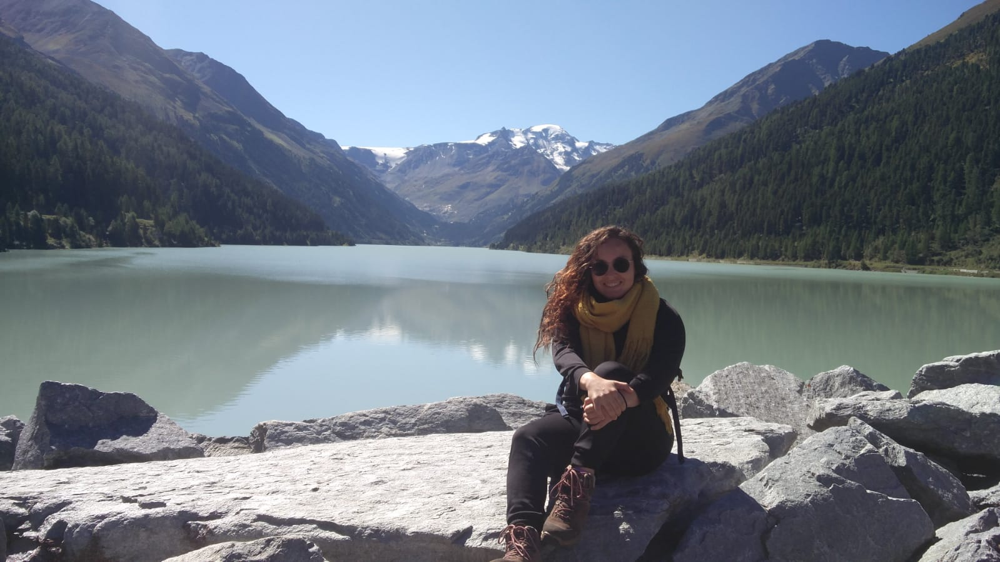

Hello and welcome to my website!
I am Marina Gomes Rachid, Ph.D. candidate at the Laboratory for Astrophysics at the Leiden Observatory, in the Netherlands. The main topics of my research are the charactherization and detection of molecules in interstellar ices and the the UV-vis optical properties of ices.

Research
In a general way, I am interested in the molecular composition of interstellar ices and the link between the solid and gas phase inventory in the interstellar medium. I am also interested in probing the morphology of interstellar ice analogs through IR spectroscopy and UV-vis interference measurements.
During the first years of my Ph.D., I worked on building a vacuum setup (IRASIS - InfraRed Absorption Setup for Ice Spectroscopy) for studying the mid-IR spectra of molecules in simulated interstellar ice conditions. The main goal of my research has been systematically characterizing the spectral signatures of complex organic species in the solid phase for supporting the upcoming JWST (James Webb Space Telescope) observations of interstellar ices. For an overview about IRASIS, see Rachid et al. 2021 (soon a new version with the last upgrades of IRASIS will be available). All the published data is publicly available from the Leiden Ice Database for Astrochemistry- LIDA (Rocha, Rachid et al. 2022 ). In the laboratory, I have also worked on the measurements of optical constants of ices in the UV-vis range and optical properties of ices.
Apart from the lab, I am also part of the team analyzing interstellar ice observations from the JWST Early Release Science program ICE AGE (P.I. Melissa McClure). More recently, I have also worked with observations of organic species in molecular cores with ALMA, with foccus on acetone (CH3COCH3) and chemically-related molecules (Rachid et al. in prep).